<title>Casa Aneto · Caldo de Huesos · v2</title>
<meta name="claude:viewport-fit-sides" content="cover">
<link rel="preconnect" href="https://fonts.googleapis.com">
<link rel="preconnect" href="https://fonts.gstatic.com" crossorigin>
<link rel="stylesheet" href="https://fonts.googleapis.com/css2?family=Comic+Neue:wght@400;700&family=DM+Mono:wght@500&display=swap">
<style>
/* PLANTILLA SAMPLIA · PROPUESTA DE ACTIVACIÓN
   Estructura fija (reutilizable para cualquier cliente):
   Portada · 01 La idea · 02 Así se ve · 03 El recorrido · 04 Las dos zonas · 05 Comprar y regalar
   · 06 Captar en la calle · 07 Dirección de arte · 08 Producción · 09 Operativa · 10 Textos · 11 Para cerrar
   Para otro cliente: cambiar solo el bloque "MARCA" de tokens, el motivo de --motif y el contenido.
   Layout: portada a sangre con el motivo de marca, después secciones numeradas con una idea por bloque
   y el detalle técnico plegado en <details> para que la lectura de cliente sea corta. */
:root{
  /* MARCA (cambiar por cliente) */
  --brand:#c30c2b; --brand-2:#ffcc03; --brand-3:#3a1c12; --brand-soft:#ffe596;
  /* tipografía del manual: Comic Sans (respaldo web: Comic Neue, para dispositivos sin Comic Sans) */
  --f-display:"Comic Sans MS","Comic Neue","Chalkboard SE",cursive;
  --f-body:"Comic Sans MS","Comic Neue","Chalkboard SE",cursive;
  --motif: repeating-linear-gradient(90deg, rgba(255,204,3,.5) 0 22px, transparent 22px 44px), repeating-linear-gradient(0deg, rgba(255,204,3,.5) 0 22px, transparent 22px 44px), linear-gradient(#fff, #fff); /* mantel MALLA QUADRETS */
  /* NEUTROS Y TEXTO */
  --bg:#fffaf0; --surface:#ffffff; --ink:#2b140c; --muted:#76574a; --line:#efdcc4;
  --hero-ink:#fff4d6; --chip-ok:#2f7a3b; --chip-ok-bg:#e3f2e3; --chip-wait:#8a5a00; --chip-wait-bg:#fff0c2; --chip-new:#c30c2b; --chip-new-bg:#fde2e6;
  --f-mono:"DM Mono",ui-monospace,Menlo,monospace;
}
@media (prefers-color-scheme: dark){:root:not([data-theme="light"]){
  --bg:#1e110b; --surface:#2a1810; --ink:#fbeedd; --muted:#cfae9a; --line:#47291c; --brand:#ff4d63; --brand-soft:#5a4410;
  --chip-ok:#8fd99a; --chip-ok-bg:#1f3a22; --chip-wait:#ffd77a; --chip-wait-bg:#4a3a10; --chip-new:#ff8a9a; --chip-new-bg:#4a1820; color-scheme:dark}}
:root[data-theme="dark"]{
  --bg:#1e110b; --surface:#2a1810; --ink:#fbeedd; --muted:#cfae9a; --line:#47291c; --brand:#ff4d63; --brand-soft:#5a4410;
  --chip-ok:#8fd99a; --chip-ok-bg:#1f3a22; --chip-wait:#ffd77a; --chip-wait-bg:#4a3a10; --chip-new:#ff8a9a; --chip-new-bg:#4a1820; color-scheme:dark}

*{box-sizing:border-box}
body{background:var(--bg);color:var(--ink);font:400 16.5px/1.62 var(--f-body);-webkit-font-smoothing:antialiased}
.wrap{max-width:1140px;margin:0 auto;padding-left:max(16px,env(safe-area-inset-left,0px));padding-right:max(16px,env(safe-area-inset-right,0px))}
h1,h2,h3{font-family:var(--f-display);font-weight:700;line-height:1.02;margin:0;text-wrap:balance;letter-spacing:.005em}
h2{font-size:clamp(34px,5vw,58px)}
h3{font-size:clamp(22px,2.4vw,28px)}
h4{font:600 17px/1.3 var(--f-body);margin:0}
p{margin:0}
.lede{font-size:clamp(18px,1.7vw,21px);color:var(--muted);max-width:62ch}
.mono{font:500 12px/1.2 var(--f-mono);letter-spacing:.1em;text-transform:uppercase}
section{padding-block:clamp(56px,8vw,104px)}
.sec{display:grid;grid-template-columns:120px 1fr;gap:28px;margin-bottom:40px;align-items:start}
.sec .num{font:700 clamp(64px,8vw,104px)/.8 var(--f-display);color:var(--brand)}
.sec .head{display:grid;gap:14px;min-width:0}
.sec .mono{color:var(--brand)}

/* PORTADA */
.hero{background:var(--brand-3);color:var(--hero-ink);position:relative;overflow:hidden}
.hero::after{content:"";position:absolute;left:0;right:0;bottom:0;height:34px;background:var(--motif);opacity:.95}
.hero .top{display:flex;justify-content:space-between;align-items:center;gap:20px;padding-block:24px 0}
.hero .top img{height:clamp(30px,3.6vw,40px);width:auto;display:block}
.hero .top .aneto{height:clamp(34px,4vw,46px)}
.hero .grid{display:grid;grid-template-columns:1.25fr .75fr;gap:32px;align-items:end;padding-block:clamp(36px,5vw,64px) clamp(70px,8vw,100px)}
.hero h1{font-size:clamp(56px,10vw,128px);color:#fff}
.hero h1 span{color:var(--brand-2);display:block}
.hero .claim{font:700 clamp(22px,2.6vw,32px)/1.15 var(--f-display);color:var(--brand-2);margin-top:18px}
.hero .lede{color:#ecd3bf;margin-top:18px}
.hero .meta{display:flex;flex-wrap:wrap;gap:8px;margin-top:26px}
.hero .meta span{font:500 12.5px/1 var(--f-mono);border:1px solid rgba(255,244,214,.3);padding:9px 12px;border-radius:999px}
.hero .pack{min-width:0}
.hero .pack img{display:block;width:100%;max-width:300px;margin-left:auto;filter:drop-shadow(0 30px 40px rgba(0,0,0,.5));transform:rotate(5deg)}
@media (prefers-reduced-motion:no-preference){.hero .pack img{animation:steam 1s cubic-bezier(.2,.8,.2,1) both}@keyframes steam{from{transform:rotate(10deg) translateY(30px);opacity:.3}}}

/* RESUMEN */
.summary{display:grid;grid-template-columns:repeat(3,1fr);gap:1px;background:var(--line);border:1px solid var(--line);border-radius:18px;overflow:hidden}
.summary div{background:var(--surface);padding:24px;display:grid;gap:8px;align-content:start;min-width:0}
.summary .mono{color:var(--brand)}
.summary p{color:var(--muted);font-size:15.5px}
.top3{display:grid;grid-template-columns:repeat(3,1fr);gap:16px;margin-top:20px}
.top3 div{border-top:4px solid var(--brand);padding-top:14px;display:grid;gap:6px;min-width:0}
.top3 b{font:700 22px/1.1 var(--f-display)}
.top3 span{color:var(--muted);font-size:15px}

/* IDEA */
.idea{background:var(--surface);border-block:1px solid var(--line)}
.idea-grid{display:grid;grid-template-columns:1fr 1fr;gap:40px;align-items:center}
.bigquote{font:700 clamp(30px,4vw,48px)/1.08 var(--f-display);color:var(--brand)}
.why{display:grid;gap:12px;margin:0;padding:0;list-style:none}
.why li{display:grid;grid-template-columns:28px 1fr;gap:10px;font-size:16px}
.why li::before{content:"";width:18px;height:18px;margin-top:4px;border-radius:4px;background:var(--motif);outline:2px solid var(--brand-2)}
.names{display:grid;grid-template-columns:repeat(3,1fr);gap:14px;margin-top:36px}
.names div{border:1px solid var(--line);border-radius:14px;padding:18px;display:grid;gap:6px;min-width:0;background:var(--bg)}
.names b{font:700 24px/1 var(--f-display);color:var(--ink)}
.names span{color:var(--muted);font-size:15px}

/* RENDERS */
figure{margin:0}
.shot{display:grid;gap:10px;min-width:0}
.shot img{display:block;width:100%;max-width:100%;border-radius:16px;aspect-ratio:16/9;object-fit:cover;background:var(--line)}
.shot figcaption{font-size:14px;color:var(--muted)}
.shot figcaption b{color:var(--ink);font-weight:600}
.gallery{display:grid;grid-template-columns:1fr 1fr;gap:22px}
.gallery .wide{grid-column:1/-1}
.shot.v img{aspect-ratio:4/5}
.note{font-size:14px;color:var(--muted);margin-top:18px;max-width:80ch}

/* RECORRIDO */
.plan{position:relative;border-radius:18px;overflow:hidden;border:1px solid var(--line);background:#eee}
.plan img{display:block;width:100%;max-width:100%;aspect-ratio:16/9;object-fit:cover}
.plan svg{position:absolute;inset:0;width:100%;height:100%}
.plan .route{fill:none;stroke:#c30c2b;stroke-width:7;stroke-dasharray:2 16;stroke-linecap:round}
.plan .pin circle{fill:#c30c2b;stroke:#fff;stroke-width:5}
.plan .pin text{fill:#fff;font:700 30px var(--f-display);text-anchor:middle;dominant-baseline:central}
.plan .zone{font:600 21px var(--f-body);fill:#2b140c;paint-order:stroke;stroke:#fff;stroke-width:7px;stroke-linejoin:round;text-anchor:middle}
.timeline{list-style:none;margin:28px 0 0;padding:0;display:grid;gap:0;border-left:3px solid var(--brand);margin-left:19px}
.timeline li{position:relative;padding:0 0 26px 34px;display:grid;grid-template-columns:110px 1fr 1fr;gap:6px 22px;min-width:0}
.timeline li::before{content:attr(data-n);position:absolute;left:-21px;top:-4px;width:38px;height:38px;border-radius:50%;background:var(--brand);color:#fff;display:grid;place-items:center;font:700 19px var(--f-display);border:3px solid var(--bg)}
.timeline .t{font:500 13px/1.6 var(--f-mono);color:var(--brand)}
.timeline h4{grid-column:2/-1}
.timeline .see,.timeline .staff{font-size:15px;color:var(--muted);min-width:0}
.timeline .see{grid-column:2}
.timeline .staff{grid-column:3}
.timeline .staff b,.timeline .see b{color:var(--ink);font-weight:600}
.express{margin-top:8px;background:var(--brand-soft);border-radius:16px;padding:20px 22px;display:grid;gap:6px}

/* ZONAS */
.zones{display:grid;grid-template-columns:1fr 1fr;gap:22px}
.zone-card{background:var(--surface);border:1px solid var(--line);border-radius:18px;overflow:hidden;display:grid;align-content:start;min-width:0}
.zone-card img{display:block;width:100%;aspect-ratio:16/9;object-fit:cover;max-width:100%}
.zone-card .in{padding:24px;display:grid;gap:14px}
.zone-card ul{margin:0;padding-left:18px;display:grid;gap:7px;font-size:15.5px}
.kettles{display:grid;grid-template-columns:repeat(4,1fr);gap:8px}
.kettles div{border-radius:12px;padding:12px 10px;text-align:center;background:var(--bg);border:1px solid var(--line);display:grid;gap:4px;min-width:0}
.kettles div:first-child{background:var(--brand-3);color:#fff4d6;border-color:var(--brand-3)}
.kettles b{font:700 16px/1.1 var(--f-display)}
.kettles span{font:500 11px var(--f-mono);letter-spacing:.06em;opacity:.8}

/* TABLAS */
.tbl{overflow-x:auto;border:1px solid var(--line);border-radius:16px;background:var(--surface)}
table{border-collapse:collapse;width:100%;min-width:760px;font-size:14.5px}
th,td{text-align:left;padding:12px 14px;border-bottom:1px solid var(--line);vertical-align:top}
th{font:500 11px/1.3 var(--f-mono);letter-spacing:.08em;text-transform:uppercase;color:var(--muted);background:var(--bg)}
tr:last-child td{border-bottom:0}
td b{font-weight:600}
.dots{font-family:var(--f-mono);letter-spacing:2px;color:var(--brand);white-space:nowrap}
.dots i{font-style:normal;opacity:.25}
.chip{display:inline-block;font:500 11px/1 var(--f-mono);letter-spacing:.05em;text-transform:uppercase;padding:6px 8px;border-radius:6px;white-space:nowrap}
.c-imp{background:var(--chip-new-bg);color:var(--chip-new)}
.c-rec{background:var(--chip-wait-bg);color:var(--chip-wait)}
.c-opt{background:var(--line);color:var(--muted)}
.c-ok{background:var(--chip-ok-bg);color:var(--chip-ok)}
.c-ane{background:var(--chip-ok-bg);color:var(--chip-ok)}
.c-sam{background:var(--chip-new-bg);color:var(--chip-new)}
.cost{font-family:var(--f-mono);color:var(--brand);font-weight:500}

/* COMERCIAL */
.mech{background:var(--brand);color:#fff;border-radius:22px;padding:clamp(24px,4vw,44px);display:grid;grid-template-columns:1.1fr .9fr;gap:30px;align-items:center}
.mech h3{font-size:clamp(30px,3.6vw,44px);color:#fff}
.mech p{color:#ffe3e7}
.mech .steps{display:grid;gap:10px}
.mech .steps div{background:rgba(255,255,255,.12);border-radius:12px;padding:12px 14px;display:grid;grid-template-columns:34px 1fr;gap:10px;align-items:center}
.mech .steps b{font:700 24px var(--f-display);color:var(--brand-2)}
.packs{display:grid;grid-template-columns:repeat(3,1fr);gap:16px;margin-top:22px}
.pk{border:1px solid var(--line);border-radius:16px;padding:20px;display:grid;gap:8px;align-content:start;background:var(--surface);min-width:0}
.pk .mono{color:var(--brand)}
.pk b{font:700 26px/1 var(--f-display)}
.pk p{font-size:15px;color:var(--muted)}
.pk.hl{background:var(--brand-3);color:#fff4d6;border-color:var(--brand-3)}
.pk.hl p{color:#e5c9b5}
.pk.hl .mono{color:var(--brand-2)}

/* DIRECCIÓN DE ARTE */
.swatches{display:grid;grid-template-columns:repeat(6,1fr);gap:10px}
.sw{border-radius:14px;overflow:hidden;border:1px solid var(--line);background:var(--surface);min-width:0}
.sw i{display:block;height:84px}
.sw div{padding:10px 12px;font-size:13px;display:grid;gap:2px}
.sw b{font-weight:600}
.sw span{font-family:var(--f-mono);font-size:11px;color:var(--muted)}
.art{display:grid;grid-template-columns:repeat(4,1fr);gap:16px;margin-top:24px}
.art div{display:grid;gap:6px;align-content:start;min-width:0}
.art .mono{color:var(--brand)}
.art p{font-size:15px;color:var(--muted)}
.atlas{margin-top:30px}

/* EXTERIOR */
.duo{display:grid;grid-template-columns:1fr 1fr;gap:22px}
.box{background:var(--surface);border:1px solid var(--line);border-radius:18px;padding:24px;display:grid;gap:12px;align-content:start;min-width:0}
.box ul{margin:0;padding-left:18px;display:grid;gap:7px;font-size:15.5px}
.box .mono{color:var(--brand)}
.box.alt{background:var(--brand-soft);border-color:transparent}
.say{font:700 clamp(22px,2.4vw,28px)/1.15 var(--f-display);color:var(--brand)}

/* PLEGABLES */
details{border:1px solid var(--line);border-radius:14px;background:var(--surface);margin-top:16px}
summary{cursor:pointer;padding:16px 20px;font:600 16px var(--f-body);list-style:none;display:flex;justify-content:space-between;gap:12px}
summary::-webkit-details-marker{display:none}
summary::after{content:"+";font:700 24px/1 var(--f-display);color:var(--brand)}
details[open] summary::after{content:"–"}
summary:focus-visible{outline:3px solid var(--brand);outline-offset:2px;border-radius:14px}
details .in{padding:0 20px 20px;display:grid;gap:16px}
details .tbl{border-radius:12px}

.cols3{display:grid;grid-template-columns:repeat(3,1fr);gap:16px}
.legend{display:flex;flex-wrap:wrap;gap:10px 18px;font-size:14px;color:var(--muted);margin-top:14px}
.pending{counter-reset:p;display:grid;grid-template-columns:1fr 1fr;gap:10px 28px;padding:0;margin:0;list-style:none}
.pending li{counter-increment:p;display:grid;grid-template-columns:34px 1fr;gap:10px;font-size:15.5px;align-items:baseline}
.pending li::before{content:counter(p,decimal-leading-zero);font:500 13px var(--f-mono);color:var(--brand)}
.hyp{background:var(--chip-wait-bg);color:var(--chip-wait);border-radius:12px;padding:12px 16px;font-size:14.5px}

footer{background:var(--brand-3);color:#e9cfbb;position:relative}
footer::before{content:"";display:block;height:22px;background:var(--motif)}
footer .wrap{display:flex;align-items:center;justify-content:space-between;gap:24px;padding-block:30px;font-size:14px;flex-wrap:wrap}
footer img{height:34px;width:auto;display:block}

@media (max-width:900px){
  .hero .grid,.idea-grid,.mech,.zones,.duo{grid-template-columns:1fr}
  .hero .pack img{max-width:200px;margin:0 auto}
  .summary,.top3,.names,.packs,.cols3{grid-template-columns:1fr}
  .gallery{grid-template-columns:1fr}
  .swatches{grid-template-columns:repeat(3,1fr)}
  .art{grid-template-columns:1fr 1fr}
  .sec{grid-template-columns:1fr;gap:10px}
  .timeline li{grid-template-columns:1fr}
  .timeline h4,.timeline .see,.timeline .staff{grid-column:1}
  .pending{grid-template-columns:1fr}
}
@media (max-width:520px){.art{grid-template-columns:1fr}.kettles{grid-template-columns:1fr 1fr}.swatches{grid-template-columns:1fr 1fr}}
</style>

<!-- PORTADA -->
<header class="hero">
  <div class="wrap top">
    
    
  </div>
  <div class="wrap grid">
    <div>
      <span class="mono" style="color:var(--brand-2)">Pop-up · Rambla de Catalunya, 30 · Barcelona · Versión 2</span>
      <h1 style="margin-top:16px">Casa Aneto<span>a fuego lento</span></h1>
      <p class="claim">Lo bueno, a fuego lento.</p>
      <p class="lede">Convertimos el local en una tienda Aneto con barra de caldos. El nuevo Caldo de Huesos se ve desde la calle, se prueba nada más entrar y acaba en casa del visitante dentro de un termo.</p>
    </div>
    <div class="pack">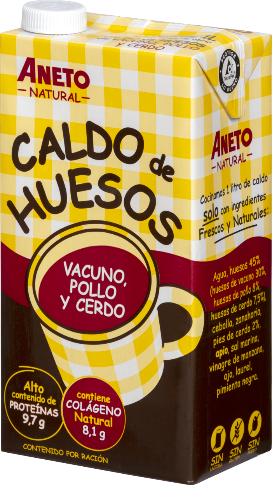</div>
  </div>
</header>

<main>
<!-- RESUMEN -->
<section>
  <div class="wrap">
    <div class="sec"><div class="num" aria-hidden="true">00</div><div class="head"><span class="mono">Resumen</span><h2>La propuesta en un minuto</h2></div></div>
    <div class="summary">
      <div><span class="mono">Atraer</span><h4>Un escaparate que ya huele a caldo</h4><p>Pack gigante, vinilo "Llevamos 8 horas esperándote" y la barra con las marmitas a la vista desde la Rambla. Fuera, un caballete "¿Un caldito?" en la acera y, si hay permiso, un reparto de vasitos.</p></div>
      <div><span class="mono">Dar a probar</span><h4>La Barra del Caldo</h4><p>Cuatro marmitas en fila. El Caldo de Huesos va primero, en granate y con su propio muro detrás. Las otras tres referencias completan la cata en 2 minutos.</p></div>
      <div><span class="mono">Convertir</span><h4>El Rebost y tu termo</h4><p>Después de la barra el visitante pasa por los packs, la despensa y la caja. Con la compra se lleva un termo Aneto que personaliza con stickers mientras pagan los siguientes.</p></div>
    </div>
    <div class="top3">
      <div><b>1 · Muro del Caldo de Huesos</b><span>Vinilo impreso de A5 a B2 (4,9 m) con el podio de producto delante. Es la primera imagen al entrar.</span></div>
      <div><b>2 · La Barra del Caldo</b><span>Mostrador existente con frente nuevo y 4 marmitas de alquiler. Es donde se prueba y donde se ve la tienda desde la calle.</span></div>
      <div><b>3 · Escaparate</b><span>Pack gigante a doble cara y dos vinilos. Es la pieza que decide si el viandante entra.</span></div>
    </div>
    <p class="note">Aquí concentramos la inversión. El resto es gráfica aplicada sobre las paredes y mobiliario existente o de alquiler.</p>
  </div>
</section>

<!-- 01 IDEA -->
<section class="idea">
  <div class="wrap">
    <div class="sec"><div class="num" aria-hidden="true">01</div><div class="head"><span class="mono">Concepto y naming</span><h2>Una tienda de barrio donde el caldo se sirve como el café</h2></div></div>
    <div class="idea-grid">
      <div style="display:grid;gap:20px">
        <p class="bigquote">"Pasa, que está calentito."</p>
        <p class="lede">Rambla de Catalunya va deprisa y el Caldo de Huesos lleva 8 horas al fuego. Casa Aneto juega con ese contraste: es una tienda de la marca con una barra donde el caldo se pide, se prueba en taza y se lleva. El relato sale del propio pack (<i>ideal para beber</i>, <i>tu momento reconfortante</i>) y lo convierte en un ritual que el visitante puede repetir en casa con su termo.</p>
      </div>
      <ul class="why">
        <li><span><b>Es Aneto.</b> Mantel de cuadros, rojo y cocina de verdad: lo que la marca define como suyo en su manual.</span></li>
        <li><span><b>El caldo de huesos manda.</b> Tiene su muro, su podio, su marmita y el primer turno de la cata.</span></li>
        <li><span><b>Se entiende desde la calle.</b> Las marmitas, el vapor y el pack gigante cuentan qué pasa dentro sin leer nada.</span></li>
      </ul>
    </div>
    <div class="names">
      <div><span class="mono" style="color:var(--brand)">Nombre</span><b>Casa Aneto</b><span>La tienda propia de la marca durante la activación.</span></div>
      <div><span class="mono" style="color:var(--brand)">Claim principal</span><b>Lo bueno, a fuego lento.</b><span>Sale del flyer oficial del Caldo de Huesos.</span></div>
      <div><span class="mono" style="color:var(--brand)">Zonas</span><b>La Barra del Caldo · El Rebost</b><span>Degustación y venta. "Rebost" es la despensa en catalán, un guiño local.</span></div>
    </div>
  </div>
</section>

<!-- 02 RENDERS -->
<section>
  <div class="wrap">
    <div class="sec"><div class="num" aria-hidden="true">02</div><div class="head"><span class="mono">Visualización · versión base · v2</span><h2>Así se ve en el local</h2><p class="lede">Renders 3D, ajustados al manual de marca de Aneto.</p></div></div>
    <div class="gallery">
      <figure class="shot wide">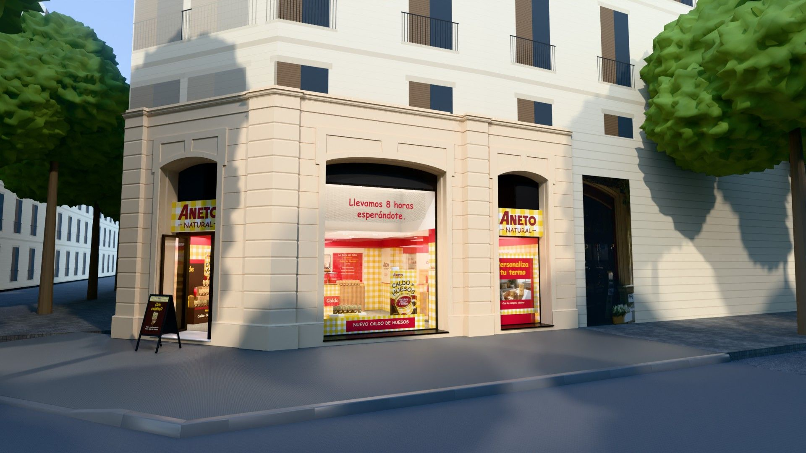<figcaption><b>Fachada.</b> Rótulos con el logo de cuadros a sangre sobre los dos arcos, cartela negra lisa en el arco central, pack gigante, vinilo "Llevamos 8 horas esperándote" y caballete informativo en la acera para atraer tráfico también.</figcaption></figure>
      <figure class="shot wide">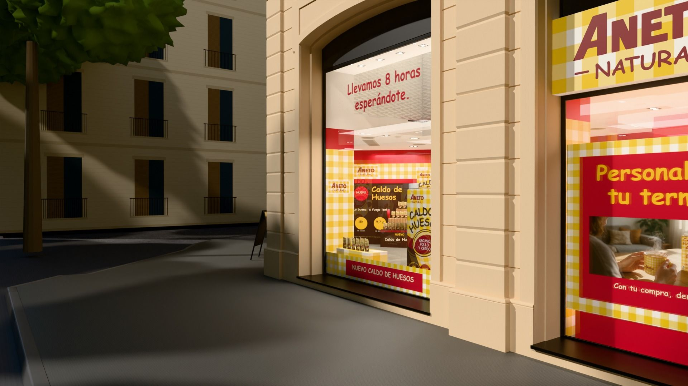<figcaption><b>A ras de acera.</b> Lo que ve quien baja por la Rambla: el panel "Personaliza tu termo" en la alcoba y, detrás, el escaparate del Caldo de Huesos.</figcaption></figure>
      <figure class="shot">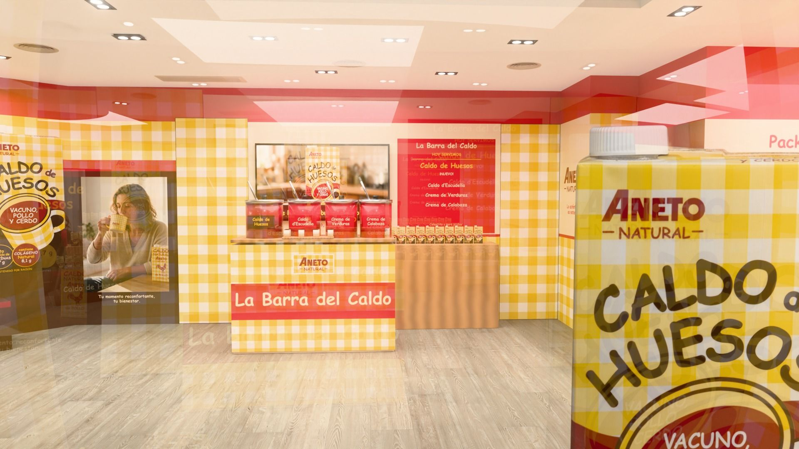<figcaption><b>Pegado al cristal.</b> El pack gigante en primer término y la barra con las marmitas al fondo.</figcaption></figure>
      <figure class="shot">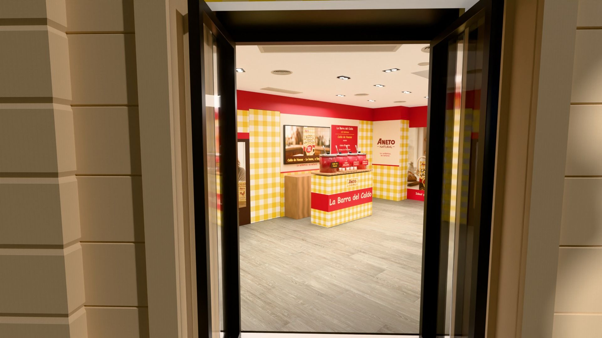<figcaption><b>El umbral.</b> Desde la puerta del chaflán la barra queda en el centro del encuadre.</figcaption></figure>
      <figure class="shot wide">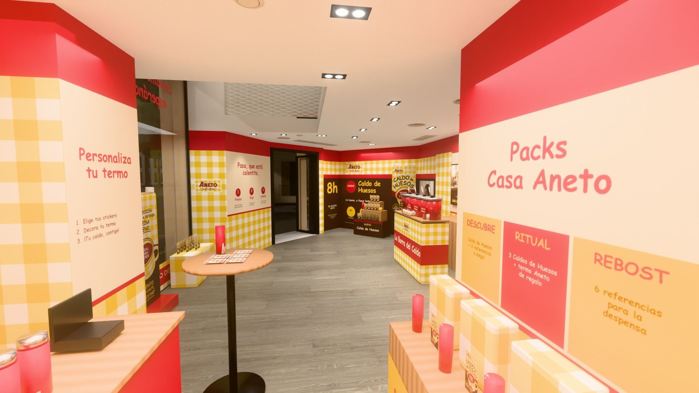<figcaption><b>Contraplano.</b> Desde el Rebost hacia la puerta se ve el recorrido entero: personalización, caja, packs, barra y el muro del Caldo de Huesos.</figcaption></figure>
      <figure class="shot">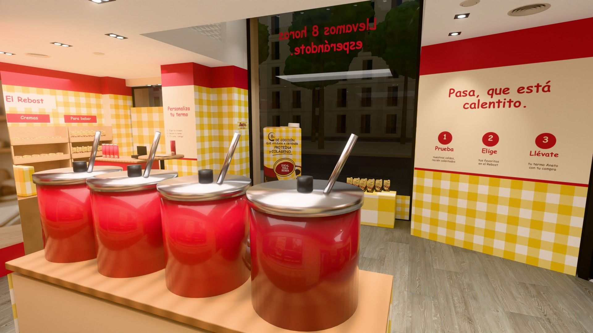<figcaption><b>Detrás de la barra.</b> El punto de vista de quien sirve: las cuatro marmitas y la tienda delante.</figcaption></figure>
      <figure class="shot">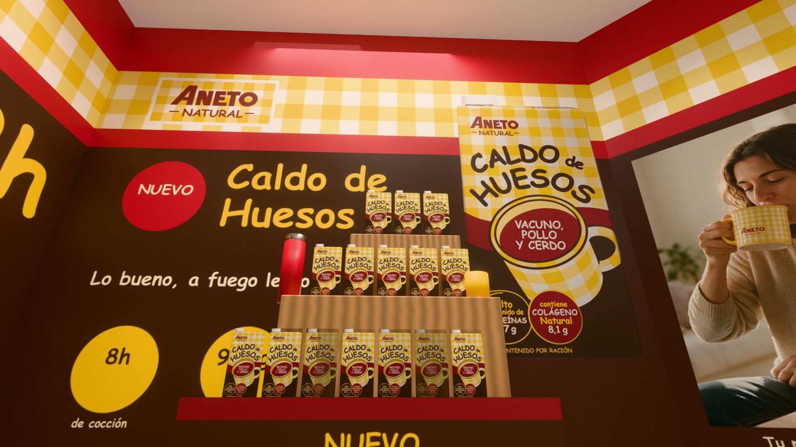<figcaption><b>El protagonista.</b> Muro y podio del Caldo de Huesos en contrapicado: es lo primero que se ve al entrar.</figcaption></figure>
      <figure class="shot v">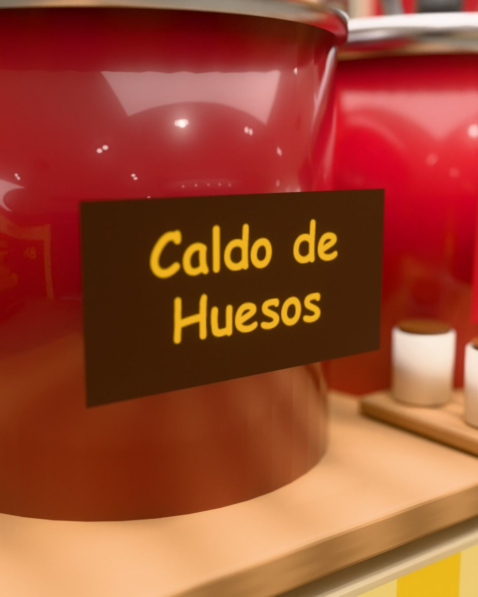<figcaption><b>La marmita del nuevo.</b> Granate, más grande y primera de la fila.</figcaption></figure>
      <figure class="shot v">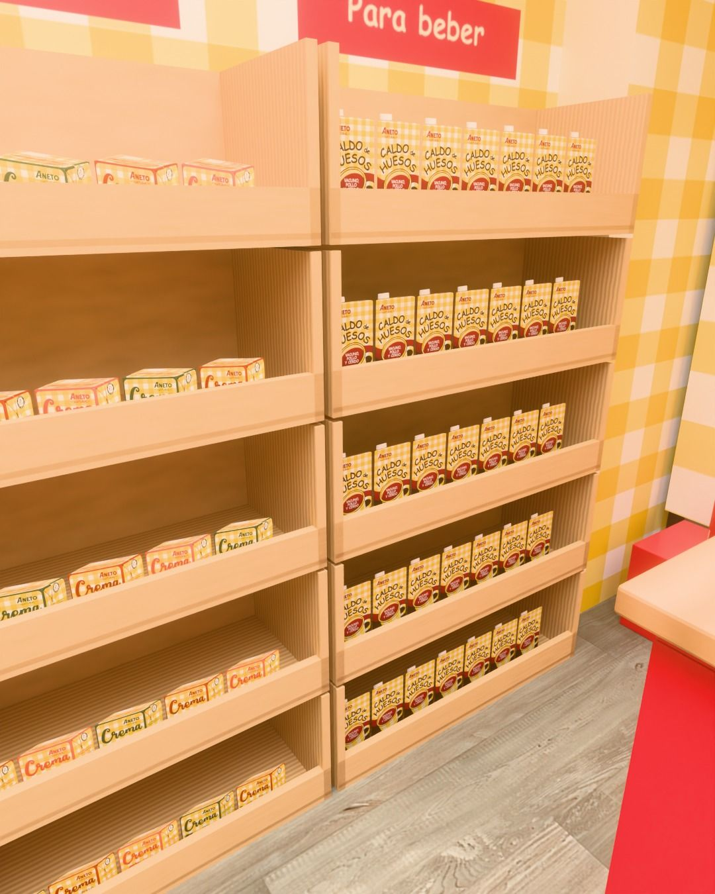<figcaption><b>El Rebost.</b> Cajas de madera por familias, con el producto a la altura de la mano.</figcaption></figure>
      <figure class="shot">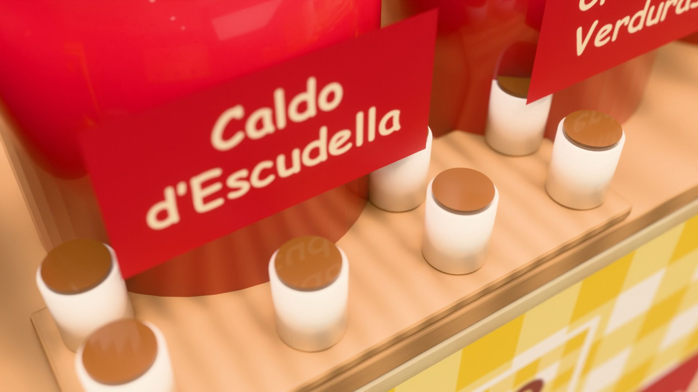<figcaption><b>La cata.</b> Vasitos de 50 ml listos en la bandeja.</figcaption></figure>
      <figure class="shot">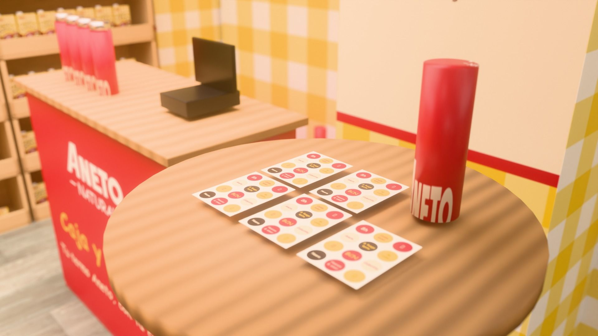<figcaption><b>Personalización.</b> Hojas de stickers y termo en la mesa alta, junto a la caja.</figcaption></figure>
      <figure class="shot wide">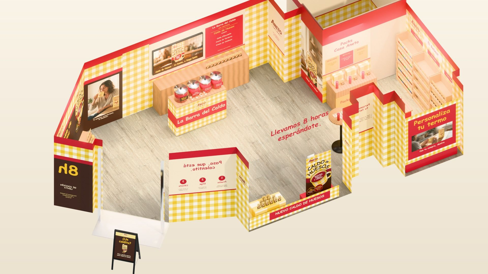<figcaption><b>Axonometría.</b> El local completo sin techo: barra, muro del Caldo de Huesos, packs, Rebost, caja y escaparates.</figcaption></figure>
    </div>
    <p class="note">Mejoras opcionales que no aparecen en los renders: grabado láser del nombre en el termo, vapor escénico en el escaparate, guirnalda de luz cálida sobre la barra y vinilo de suelo con el recorrido. Los espejos del local en C1 y B3 se forran con vinilo (logo y claim) para que no reflejen la gráfica invertida.</p>
    <div class="art" style="margin-top:20px">
      <div><span class="mono">v2 · Color</span><p>Rojo Aneto (P 704 C) y amarillos del mantel fieles al manual en todos los renders.</p></div>
      <div><span class="mono">v2 · Marca</span><p>Logo con pastilla de cuadros en el muro del Caldo de Huesos y en El Rebost. La banda del muro pasa a rojo corporativo.</p></div>
      <div><span class="mono">v2 · Fotografía</span><p>En B2, una persona disfrutando del caldo en casa, como pide el estilo fotográfico de la marca.</p></div>
      <div><span class="mono">v2 · Ajustes</span><p>Espejos de C1 y B3 forrados y el "8h" de A5 desplazado para que el pilar no lo tape.</p></div>
    </div>
  </div>
</section>

<!-- 03 RECORRIDO -->
<section style="padding-top:0">
  <div class="wrap">
    <div class="sec"><div class="num" aria-hidden="true">03</div><div class="head"><span class="mono">Recorrido e itinerario del visitante</span><h2>De la acera al termo en diez minutos</h2><p class="lede">Un solo sentido, de derecha a izquierda y de vuelta por el escaparate. Nadie tiene que cruzarse con la cola de la barra para pagar.</p></div></div>
    <div class="plan">
      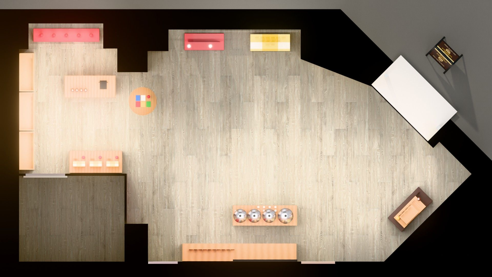
      <svg viewBox="0 0 1920 1080" aria-label="Recorrido numerado sobre la planta" role="img">
        <path class="route" d="M1723 223 L1560 446 L1603 790 L1220 800 L1037 740 L620 690 L345 600 L194 506 L352 440 L557 394 L1080 330 L1508 386"/>
        <g class="zone"><text x="1640" y="930">Muro + podio</text><text x="1037" y="960">La Barra del Caldo</text><text x="374" y="720">Packs</text><text x="130" y="330">El Rebost</text><text x="560" y="250">Caja · Termos</text><text x="700" y="470">Stickers</text><text x="1000" y="190">Escaparate</text><text x="1700" y="140">Calle</text></g>
        <g class="pin"><circle cx="1723" cy="223" r="28"/><text x="1723" y="225">1</text></g>
        <g class="pin"><circle cx="1560" cy="446" r="28"/><text x="1560" y="448">2</text></g>
        <g class="pin"><circle cx="1603" cy="790" r="28"/><text x="1603" y="792">3</text></g>
        <g class="pin"><circle cx="1037" cy="740" r="28"/><text x="1037" y="742">4</text></g>
        <g class="pin"><circle cx="345" cy="600" r="28"/><text x="345" y="602">5</text></g>
        <g class="pin"><circle cx="194" cy="506" r="28"/><text x="194" y="508">6</text></g>
        <g class="pin"><circle cx="352" cy="440" r="28"/><text x="352" y="442">7</text></g>
        <g class="pin"><circle cx="557" cy="394" r="28"/><text x="557" y="396">8</text></g>
        <g class="pin"><circle cx="1508" cy="386" r="28"/><text x="1508" y="388">9</text></g>
      </svg>
    </div>
    <ol class="timeline">
      <li data-n="1"><span class="t">00:00 · acera</span><h4>Ve vapor, rojo y un pack de metro y medio</h4><p class="see"><b>Vive:</b> el escaparate con la barra al fondo y el caballete "¿Un caldito?" en la acera. Con permiso, alguien le ofrece un vasito de Caldo de Huesos y le invita a entrar.</p><p class="staff"><b>Equipo:</b> anfitrión/a en la puerta o en la acera. <b>Mensaje:</b> "Recién calentito. Dentro tienes tres más."</p></li>
      <li data-n="2"><span class="t">00:30 · entrada</span><h4>"Pasa, que está calentito"</h4><p class="see"><b>Vive:</b> la pared A1 le explica en tres pasos qué puede hacer: prueba, elige y llévate tu termo.</p><p class="staff"><b>Equipo:</b> el/la anfitrión/a le recibe y le acompaña dos pasos hacia el muro.</p></li>
      <li data-n="3"><span class="t">01:00 · muro B1</span><h4>Descubre el Caldo de Huesos</h4><p class="see"><b>Vive:</b> el pack gigante, las 8 horas de cocción y los datos de proteína y colágeno, con el podio de producto real delante.</p><p class="staff"><b>Equipo:</b> el/la anfitrión/a cuenta el producto en una frase y le pasa a la barra.</p></li>
      <li data-n="4"><span class="t">02:00 · barra</span><h4>Prueba los cuatro, empezando por el nuevo</h4><p class="see"><b>Vive:</b> primero un vasito de Caldo de Huesos. Después escoge entre Escudella, Verduras o Calabaza. La pizarra le recuerda los nombres.</p><p class="staff"><b>Equipo:</b> barra. Sirve, explica y da el flyer con QR del Caldo de Huesos. Señala el Rebost: "Están todos ahí detrás."</p></li>
      <li data-n="5"><span class="t">05:00 · packs C4</span><h4>Ve los packs ya montados</h4><p class="see"><b>Vive:</b> tres packs en la mesa, con la bolsa de mantel y el termo dentro. El Pack Ritual es el que lleva el termo de regalo.</p><p class="staff"><b>Equipo:</b> autoservicio. Las fichas de la pared resumen cada pack.</p></li>
      <li data-n="6"><span class="t">06:00 · Rebost D1</span><h4>Elige en la despensa</h4><p class="see"><b>Vive:</b> la gama por familias (Caldos, Cremas y Para beber) en cajas de madera, a la altura de la mano.</p><p class="staff"><b>Equipo:</b> caja/reposición. Repone desde el almacén y ayuda a elegir si hace falta.</p></li>
      <li data-n="7"><span class="t">08:00 · caja</span><h4>Paga y recibe su termo</h4><p class="see"><b>Vive:</b> con la compra que cumpla la condición, el termo Aneto y una hoja de stickers.</p><p class="staff"><b>Equipo:</b> caja con el TPV de Aneto. Solo cobra y entrega, sin personalizar.</p></li>
      <li data-n="8"><span class="t">09:00 · mesa alta</span><h4>Personaliza su termo</h4><p class="see"><b>Vive:</b> decora el termo con stickers en la mesa alta, debajo del cartel de E3. Lo hace a su ritmo y no bloquea la caja.</p><p class="staff"><b>Equipo:</b> sin personal fijo. La caja vigila la mesa de reojo.</p></li>
      <li data-n="9"><span class="t">10:00 · salida</span><h4>Sale con el ritual en la mano</h4><p class="see"><b>Vive:</b> vuelve a la puerta por el lado del escaparate con su bolsa, su termo y el QR del flyer para saber más.</p><p class="staff"><b>Equipo:</b> el/la anfitrión/a despide y, si cabe, invita a una foto con el pack gigante.</p></li>
    </ol>
    <div class="express"><h4>Visita exprés, en 2 minutos</h4><p style="color:var(--muted)">Quien va con prisa hace 1 → 2 → 4: prueba el Caldo de Huesos en la barra, coge el flyer con QR y sale. La barra es lo primero que encuentra, así que también funciona como punto de paso.</p></div>
  </div>
</section>

<!-- 04 ZONAS -->
<section style="padding-top:0">
  <div class="wrap">
    <div class="sec"><div class="num" aria-hidden="true">04</div><div class="head"><span class="mono">Las dos zonas</span><h2>Probar a la derecha, comprar al fondo</h2></div></div>
    <div class="zones">
      <article class="zone-card">
        
        <div class="in">
          <span class="mono" style="color:var(--brand)">Zona 1 · La Barra del Caldo · B1, B2 y B4</span>
          <h3>Cuatro marmitas, un orden</h3>
          <div class="kettles">
            <div><b>Caldo de Huesos</b><span>1 · NUEVO</span></div>
            <div><b>Caldo d'Escudella</b><span>2</span></div>
            <div><b>Crema de Verduras</b><span>3</span></div>
            <div><b>Crema de Calabaza</b><span>4</span></div>
          </div>
          <ul>
            <li>Mostrador del local con frente nuevo de mantel, y contrabarra en B4 con el stock del día.</li>
            <li>Marmitas eléctricas de 10 L. La del Caldo de Huesos es granate y más grande, y las otras tres son rojas.</li>
            <li>Vasitos de 50 ml. El Caldo de Huesos se sirve siempre primero.</li>
            <li>La TV del local pone en bucle el Caldo de Huesos.</li>
          </ul>
        </div>
      </article>
      <article class="zone-card">
        
        <div class="in">
          <span class="mono" style="color:var(--brand)">Zona 2 · El Rebost · C4, D1 y E3</span>
          <h3>Una despensa en cajas de madera</h3>
          <ul>
            <li><b>Caldo de Huesos:</b> podio en B1 y la familia "Para beber" del Rebost, a la altura de la vista.</li>
            <li><b>Resto de la gama:</b> por familias (Caldos y Cremas) en cajas de madera modulares de alquiler.</li>
            <li><b>Packs:</b> mesa delante de C4 con los packs montados en bolsa de mantel.</li>
            <li><b>Caja:</b> mostrador rojo delante de la alcoba con el TPV de Aneto y los termos a la vista.</li>
            <li><b>Stock:</b> bajo la contrabarra y la caja, más el cuarto trasero si está disponible (pendiente de confirmar).</li>
          </ul>
        </div>
      </article>
    </div>
  </div>
</section>

<!-- 05 COMERCIAL -->
<section style="padding-top:0">
  <div class="wrap">
    <div class="sec"><div class="num" aria-hidden="true">05</div><div class="head"><span class="mono">Mecánica comercial y regalos</span><h2>Tu caldo, contigo</h2></div></div>
    <div class="mech">
      <div style="display:grid;gap:14px">
        <span class="mono" style="color:var(--brand-2)">Mecánica principal · condiciones provisionales</span>
        <h3>Compra a partir de €€€ y llévate tu termo Aneto</h3>
        <p>Una sola regla que se entiende en la pared, en la barra y en la caja. El termo prolonga lo que se ha probado: el caldo se bebe, y ahora también se lleva puesto.</p>
      </div>
      <div class="steps">
        <div><b>1</b><span>Prueba en la barra</span></div>
        <div><b>2</b><span>Elige en el Rebost o en los packs</span></div>
        <div><b>3</b><span>Paga y recibe el termo con stickers</span></div>
      </div>
    </div>
    <div class="packs">
      <div class="pk"><span class="mono">Pack Descubre</span><b>Huesos + 2</b><p>Caldo de Huesos y dos referencias a elegir. Es la puerta de entrada a la gama.</p></div>
      <div class="pk hl"><span class="mono">Pack Ritual</span><b>3 Huesos + termo</b><p>Tres Caldos de Huesos con el termo incluido. Es el pack del lanzamiento.</p></div>
      <div class="pk"><span class="mono">Pack Rebost</span><b>6 referencias</b><p>Despensa variada para cocinar y beber, en bolsa de mantel.</p></div>
    </div>
    <p class="note">Precios, composición definitiva y umbral del regalo pendientes de aprobación por Aneto. La taza de cerámica puede ser un segundo escalón con un umbral menor, o el regalo de los días de más afluencia.</p>
    <h3 style="margin-top:40px">Personalización del termo</h3>
    <div class="tbl" style="margin-top:16px">
      <table>
        <thead><tr><th>Opción</th><th>Atractivo</th><th>Coste relativo</th><th>Tiempo por persona</th><th>Recursos</th><th>Facilidad</th><th>Papel</th></tr></thead>
        <tbody>
          <tr><td><b>Stickers</b></td><td class="dots">●●<i>●</i></td><td class="cost">€</td><td>1-2 min, autoservicio</td><td>Hojas de stickers con iconos y frases de marca, mesa alta existente</td><td class="dots">●●●</td><td><span class="chip c-ok">Base</span></td></tr>
          <tr><td><b>Charms</b></td><td class="dots">●●<i>●</i></td><td class="cost">€€</td><td>1 min</td><td>Termo con anilla o asa compatible, expositor de charms</td><td class="dots">●●<i>●</i></td><td><span class="chip c-opt">Alternativa</span></td></tr>
          <tr><td><b>Grabado del nombre</b></td><td class="dots">●●●</td><td class="cost">€€€</td><td>3-5 min, con cola</td><td>Máquina láser de alquiler, operador, extracción y punto eléctrico</td><td class="dots">●<i>●●</i></td><td><span class="chip c-rec">Mejora opcional</span></td></tr>
        </tbody>
      </table>
    </div>
    <p class="note">Recomendación: stickers en la versión base, porque los hace el propio visitante y la caja sigue a su ritmo. El grabado del nombre queda como mejora para días concretos, como la apertura o los fines de semana, con turnos por QR para que no haya cola.</p>
  </div>
</section>

<!-- 06 EXTERIOR -->
<section style="padding-top:0">
  <div class="wrap">
    <div class="sec"><div class="num" aria-hidden="true">06</div><div class="head"><span class="mono">Captación exterior · sujeta a permisos</span></div></div>
    <div class="duo">
      <div class="box">
        <span class="mono">Opción A · reparto en la acera</span>
        <p class="say">"Recién calentito. Dentro tienes tres más."</p>
        <ul>
          <li><b>Quién:</b> 1 persona con el delantal Aneto, en las horas punta.</li>
          <li><b>Qué lleva:</b> termo dispensador isotérmico de 5 L con Caldo de Huesos, bandeja, vasitos de 30 ml, flyer con QR y bolsa para residuos.</li>
          <li><b>Servicio:</b> solo Caldo de Huesos, para no competir con la barra. El termo se rellena en la barra cada 60-80 vasitos.</li>
          <li><b>Coordinación:</b> la barra avisa cuando hay cola dentro y el reparto se para.</li>
          <li><b>Permisos:</b> el reparto de alimentos y el caballete en vía pública necesitan autorización municipal. Lo confirmaremos con el Ajuntament antes de cerrar la propuesta.</li>
        </ul>
      </div>
      <div class="box alt">
        <span class="mono">Opción B · si no hay permiso</span>
        <p class="say">La puerta es el mostrador</p>
        <ul>
          <li>El/la anfitrión/a ofrece el vasito justo en el umbral, dentro del local, a quien se para frente al escaparate.</li>
          <li>La barra y las marmitas quedan a la vista a través del escaparate central, con luz cálida y vapor.</li>
          <li>El panel de la ventana de la alcoba ("Personaliza tu termo") enseña el regalo desde la calle.</li>
          <li>El vinilo del escaparate y la cartela del arco hacen el trabajo de llamada.</li>
        </ul>
      </div>
    </div>
  </div>
</section>

<!-- 07 DIRECCIÓN DE ARTE -->
<section style="padding-top:0">
  <div class="wrap">
    <div class="sec"><div class="num" aria-hidden="true">07</div><div class="head"><span class="mono">Dirección de arte</span><h2>El muro es el pack</h2><p class="lede">Usamos los colores del manual de Aneto y la misma estructura del pack del Caldo de Huesos: mantel arriba, banda en rojo Aneto y fondo color caldo, firmado con el logo corporativo de pastilla.</p></div></div>
    <div class="swatches">
      <div class="sw"><i style="background:#c30c2b"></i><div><b>Rojo Aneto</b><span>P 704 C</span></div></div>
      <div class="sw"><i style="background:#ffcc03"></i><div><b>Amarillo</b><span>P 116 C</span></div></div>
      <div class="sw"><i style="background:#ffe596"></i><div><b>Amarillo 50 %</b><span>50 % 116 C</span></div></div>
      <div class="sw"><i style="background:var(--motif)"></i><div><b>Mantel</b><span>cuadro 10,7 cm</span></div></div>
      <div class="sw"><i style="background:#3a1c12"></i><div><b>Caldo</b><span>del pack</span></div></div>
      <div class="sw"><i style="background:#8c1a28"></i><div><b>Granate</b><span>solo marmita del nuevo</span></div></div>
    </div>
    <div class="art">
      <div><span class="mono">Materiales</span><p>Vinilo impreso sobre las paredes, madera de pino en cajas y roble en encimeras, esmalte en las marmitas y cerámica en las tazas.</p></div>
      <div><span class="mono">Luz</span><p>Cálida, a 2700 K. Refuerzo de luz en la barra, el muro del Caldo de Huesos y el Rebost, y focos del local reorientados.</p></div>
      <div><span class="mono">Tipografía</span><p>Comic Sans, la principal del manual, en titulares y llamadas. Pluto Cond, la secundaria, en subtítulos y textos en cuanto tengamos el archivo de la fuente; hasta entonces van en Comic Sans.</p></div>
      <div><span class="mono">Mobiliario</span><p>Mostrador, TV, mesa alta y rótulos del local reutilizados. Cajas de madera modulares y marmitas de alquiler.</p></div>
    </div>
    <figure class="shot atlas">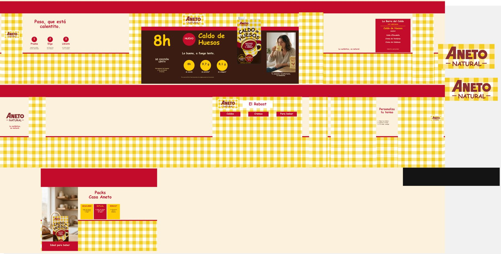<figcaption><b>Todas las paredes desplegadas.</b> Es el atlas UV del PSB del local, con un grupo por pared, objetos inteligentes para fotos, logos y mantel, y textos editables. Se exporta directo a la escena 3D y sirve de base para los artes finales de impresión.</figcaption></figure>
  </div>
</section>

<!-- 08 PRODUCCIÓN -->
<section style="padding-top:0">
  <div class="wrap">
    <div class="sec"><div class="num" aria-hidden="true">08</div><div class="head"><span class="mono">Producción y presupuesto por prioridades</span><h2>Dónde invertir y dónde simplificar</h2><p class="lede">Sin un presupuesto cerrado, ordenamos las partidas por impacto. La versión base mantiene el concepto completo. Las cifras llegarán cuando tengamos fechas, medidas y cantidades.</p></div></div>
    <div class="legend"><span><span class="chip c-imp">Imprescindible</span> el concepto no funciona sin ello</span><span><span class="chip c-rec">Recomendable</span> suma si hay margen</span><span><span class="chip c-opt">Opcional</span> mejora posterior</span><span><span class="chip c-ane">Aneto</span> <span class="chip c-sam">Agencia</span> quién lo aporta</span><span><span class="cost">€ / €€ / €€€</span> peso relativo</span></div>
    <div class="tbl" style="margin-top:16px">
      <table>
        <thead><tr><th>Elemento o partida</th><th>Función</th><th>Solución propuesta</th><th>Prioridad</th><th>Responsable</th><th>Factores que afectan al coste</th></tr></thead>
        <tbody>
          <tr><td><b>Muro Caldo de Huesos (A5-B1-B2)</b></td><td>Primera imagen al entrar y foco del lanzamiento</td><td>Vinilo impreso de 4,9 × 2,2 m, laminado mate</td><td><span class="chip c-imp">Imprescindible</span></td><td><span class="chip c-sam">Agencia</span></td><td><span class="cost">€€</span> m², estado de la pared y si se coloca de noche</td></tr>
          <tr><td><b>Escaparate</b></td><td>Atraer desde la Rambla</td><td>Pack gigante en dibond a doble cara (1,5 m), peana y dos vinilos de cristal</td><td><span class="chip c-imp">Imprescindible</span></td><td><span class="chip c-sam">Agencia</span></td><td><span class="cost">€€</span> tamaño del pack, cristal por dentro o por fuera</td></tr>
          <tr><td><b>Barra del Caldo</b></td><td>Degustación</td><td>Mostrador del local con frente nuevo en vinilo y encimera de madera</td><td><span class="chip c-imp">Imprescindible</span></td><td><span class="chip c-sam">Agencia</span></td><td><span class="cost">€</span> si el mostrador existente se puede usar</td></tr>
          <tr><td><b>Marmitas y menaje</b></td><td>Producto caliente y seguro</td><td>4 marmitas eléctricas de 10 L, cazos, bandejas y contenedor de restos</td><td><span class="chip c-imp">Imprescindible</span></td><td><span class="chip c-sam">Agencia</span> (alquiler)</td><td><span class="cost">€</span> días de alquiler, potencia disponible</td></tr>
          <tr><td><b>Gráfica perimetral</b></td><td>Convertir el local en tienda Aneto</td><td>Pintura o vinilo crema, cornisa roja y zócalo de mantel a 95 cm</td><td><span class="chip c-imp">Imprescindible</span></td><td><span class="chip c-sam">Agencia</span></td><td><span class="cost">€€</span> m² totales; la pintura es más barata que el vinilo</td></tr>
          <tr><td><b>El Rebost (D1)</b></td><td>Exposición ordenada por familias</td><td>Cajas de madera modulares (15 uds) de alquiler y rotulación de familias en la pared</td><td><span class="chip c-imp">Imprescindible</span></td><td><span class="chip c-sam">Agencia</span></td><td><span class="cost">€</span> número de referencias y frentes</td></tr>
          <tr><td><b>Caja y termos</b></td><td>Cobro y entrega del regalo</td><td>Mostrador lacado rojo con frente impreso. El TPV lo pone Aneto</td><td><span class="chip c-imp">Imprescindible</span></td><td><span class="chip c-sam">Agencia</span> · TPV <span class="chip c-ane">Aneto</span></td><td><span class="cost">€</span> alquiler frente a fabricación</td></tr>
          <tr><td><b>Podio Caldo de Huesos</b></td><td>Producto real delante del muro</td><td>Tres cajas escalonadas de DM, la base impresa</td><td><span class="chip c-rec">Recomendable</span></td><td><span class="chip c-sam">Agencia</span></td><td><span class="cost">€</span> acabado y si se reutiliza en otras acciones</td></tr>
          <tr><td><b>Mesa de packs (C4)</b></td><td>Mostrar los packs montados</td><td>Mesa de madera de alquiler con frente impreso</td><td><span class="chip c-rec">Recomendable</span></td><td><span class="chip c-sam">Agencia</span></td><td><span class="cost">€</span> alquiler</td></tr>
          <tr><td><b>Rótulos y cartela</b></td><td>Identificar la tienda</td><td>Reutilizar los rótulos 3D del local con el logo oficial de pastilla de cuadros a todo el rótulo, y cartela negra lisa en el arco</td><td><span class="chip c-imp">Imprescindible</span></td><td><span class="chip c-sam">Agencia</span></td><td><span class="cost">€</span> permisos de fachada y altura de colocación</td></tr>
          <tr><td><b>Panel de la ventana de la alcoba</b></td><td>Enseñar el regalo desde la calle</td><td>Dibond a doble cara en el tablero existente y peana con termos</td><td><span class="chip c-rec">Recomendable</span></td><td><span class="chip c-sam">Agencia</span></td><td><span class="cost">€</span> tamaño</td></tr>
          <tr><td><b>Caballete exterior</b></td><td>Cartel informativo y llamada en la acera</td><td>Caballete de doble cara de la agencia, vinilado con "¿Un caldito?" y el pack de Caldo de Huesos</td><td><span class="chip c-rec">Recomendable</span></td><td><span class="chip c-sam">Agencia</span></td><td><span class="cost">€</span> permiso de vía pública</td></tr>
          <tr><td><b>Stickers del termo</b></td><td>Personalización</td><td>Hojas troqueladas con iconos y frases de marca</td><td><span class="chip c-imp">Imprescindible</span></td><td><span class="chip c-sam">Agencia</span></td><td><span class="cost">€</span> tirada; depende del número de termos</td></tr>
          <tr><td><b>Termos, tazas, bolsas, delantales y vasos</b></td><td>Regalo, packs y uniforme</td><td>Material promocional de la marca</td><td><span class="chip c-imp">Imprescindible</span></td><td><span class="chip c-ane">Aneto</span></td><td>Cantidades por día y modelo de termo (anilla para charms, superficie para grabado)</td></tr>
          <tr><td><b>Producto y flyer con QR</b></td><td>Degustación, venta y seguimiento</td><td>Stock de la gama, briks para la barra y el flyer existente del Caldo de Huesos</td><td><span class="chip c-imp">Imprescindible</span></td><td><span class="chip c-ane">Aneto</span></td><td>Litros por día (ver operativa) y surtido final</td></tr>
          <tr><td><b>Consumibles</b></td><td>Servicio</td><td>Vasitos compostables de 30-50 ml, servilletas, guantes y bolsas de residuos</td><td><span class="chip c-imp">Imprescindible</span></td><td><span class="chip c-sam">Agencia</span></td><td><span class="cost">€</span> afluencia</td></tr>
          <tr><td><b>Personal</b></td><td>Atender las dos zonas y la puerta</td><td>3 personas por turno, más el reparto exterior opcional</td><td><span class="chip c-imp">Imprescindible</span></td><td><span class="chip c-sam">Agencia</span></td><td><span class="cost">€€€</span> horario, días y carné de manipulador</td></tr>
          <tr><td><b>Transporte, montaje y desmontaje</b></td><td>Implantación</td><td>1 noche de montaje y 1 de desmontaje, con retirada de vinilos</td><td><span class="chip c-imp">Imprescindible</span></td><td><span class="chip c-sam">Agencia</span></td><td><span class="cost">€€</span> accesos, horario de carga y altura</td></tr>
          <tr><td><b>Grabado láser</b></td><td>Mejora de la personalización</td><td>Equipo de alquiler con operador</td><td><span class="chip c-opt">Opcional</span></td><td><span class="chip c-sam">Agencia</span></td><td><span class="cost">€€€</span> días de uso y extracción de humos</td></tr>
          <tr><td><b>Vapor escénico y guirnalda</b></td><td>Más atracción en el escaparate</td><td>Humidificador ultrasónico y guirnalda de luz cálida</td><td><span class="chip c-opt">Opcional</span></td><td><span class="chip c-sam">Agencia</span></td><td><span class="cost">€</span> seguridad junto al cristal</td></tr>
        </tbody>
      </table>
    </div>
    <details>
      <summary>Cómo abaratar sin perder el concepto</summary>
      <div class="in">
        <div class="cols3">
          <div class="box"><span class="mono">Reutilizar</span><ul><li>Mostrador, TV, mesa alta y rótulos del local</li><li>Los espejos de C1 y B3 como soporte, forrados con vinilo</li><li>El flyer con QR que ya existe</li></ul></div>
          <div class="box"><span class="mono">Simplificar</span><ul><li>Pintar la pared crema y la cornisa roja, y dejar el vinilo solo para el muro, la pizarra y el zócalo</li><li>Un único archivo de mantel para todo, que se imprime por metros</li><li>Cajas de madera de alquiler en lugar de estanterías a medida</li></ul></div>
          <div class="box"><span class="mono">Aplazar</span><ul><li>Grabado láser, vapor escénico y guirnalda</li><li>Reparto exterior, hasta tener el permiso</li><li>Segundo escalón de regalo con taza</li></ul></div>
        </div>
      </div>
    </details>
  </div>
</section>

<!-- 09 OPERATIVA -->
<section style="padding-top:0">
  <div class="wrap">
    <div class="sec"><div class="num" aria-hidden="true">09</div><div class="head"><span class="mono">Operativa y recursos</span></div></div>
    <div class="cols3">
      <div class="box"><span class="mono">Anfitrión/a · puerta</span><ul><li>Da la bienvenida y presenta el Caldo de Huesos en el muro</li><li>Reparte en la acera en las horas punta si hay permiso</li><li>Ordena la cola de la barra</li></ul></div>
      <div class="box"><span class="mono">Barra · degustación</span><ul><li>Sirve en orden, con el Caldo de Huesos primero</li><li>Controla la temperatura y repone las marmitas</li><li>Entrega el flyer con QR y deriva al Rebost</li></ul></div>
      <div class="box"><span class="mono">Caja · regalo · reposición</span><ul><li>Cobra con el TPV de Aneto y entrega el termo y los stickers</li><li>Repone el Rebost y los packs desde el almacén</li><li>Echa un ojo a la mesa de personalización</li></ul></div>
    </div>
    <details>
      <summary>Necesidades técnicas, consumibles y residuos</summary>
      <div class="in">
        <div class="tbl"><table>
          <thead><tr><th>Tema</th><th>Propuesta</th><th>A confirmar</th></tr></thead>
          <tbody>
            <tr><td><b>Calentar</b></td><td>El producto llega listo en brik y se calienta directamente en las marmitas eléctricas al baño maría. No hace falta cocina.</td><td>Si el local tiene cocina o un office, y la operativa de Aneto</td></tr>
            <tr><td><b>Mantener caliente</b></td><td>Por encima de 65 °C, con un registro de temperatura por turno. Marmitas tapadas entre servicios.</td><td>Protocolo de seguridad alimentaria de Aneto</td></tr>
            <tr><td><b>Electricidad</b></td><td>4 marmitas a 400-500 W cada una, más la TV, el TPV y la luz: unos 2,5 kW. Recomendamos dos circuitos de 16 A en la barra.</td><td>Potencia contratada y ubicación de los enchufes</td></tr>
            <tr><td><b>Agua y limpieza</b></td><td>Lavado de cazos y marmitas en el punto de agua del local, con paños y desinfectante.</td><td>Punto de agua además del baño</td></tr>
            <tr><td><b>Consumo de producto</b></td><td>Litros al día ≈ degustaciones × 0,05 L. Por ejemplo, 400 degustaciones son unos 20 L al día, repartidos 40 % Caldo de Huesos y 20 % cada uno de los otros tres.</td><td>Previsión de afluencia (es una hipótesis)</td></tr>
            <tr><td><b>Residuos</b></td><td>Papelera de dos fracciones en la barra y la salida, bidón cerrado para los restos de caldo y retirada diaria.</td><td>Normas del edificio</td></tr>
            <tr><td><b>Almacenaje</b></td><td>Producto a temperatura ambiente bajo la contrabarra y la caja. Reserva en el cuarto trasero.</td><td>Si existe ese cuarto y qué tamaño tiene</td></tr>
          </tbody>
        </table></div>
        <p class="hyp">Hipótesis de personal: horario de 10:00 a 20:00 con dos turnos solapados a mediodía. El número final depende de las horas de apertura, la duración, la afluencia prevista y si hay reparto exterior.</p>
      </div>
    </details>
  </div>
</section>

<!-- 10 TEXTOS -->
<section style="padding-top:0">
  <div class="wrap">
    <div class="sec"><div class="num" aria-hidden="true">10</div><div class="head"><span class="mono">Textos</span><h2>Qué dice cada pieza</h2></div></div>
    <div class="legend"><span><span class="chip c-ok">Oficial</span> sale del pack, el flyer o el manual</span><span><span class="chip c-rec">Creativo</span> propuesta, pendiente de validar</span><span><span class="chip c-imp">Provisional</span> depende de condiciones comerciales sin aprobar</span></div>
    <div class="tbl" style="margin-top:16px"><table>
      <thead><tr><th>Pieza</th><th>Texto</th><th>Estado</th></tr></thead>
      <tbody>
        <tr><td>Vinilo escaparate</td><td>"Llevamos 8 horas esperándote."</td><td><span class="chip c-rec">Creativo</span></td></tr>
        <tr><td>Caballete</td><td>"¿Un caldito? Pasa y prueba nuestro nuevo Caldo de Huesos."</td><td><span class="chip c-rec">Creativo</span></td></tr>
        <tr><td>Pared de bienvenida A1</td><td>"Pasa, que está calentito." · Prueba · Elige · Llévate tu termo Aneto con tu compra</td><td><span class="chip c-rec">Creativo</span> <span class="chip c-imp">Provisional</span></td></tr>
        <tr><td>Muro Caldo de Huesos</td><td>"Lo bueno, a fuego lento." · 8 h de cocción · 9,7 g de proteína* · 8,1 g de colágeno* · *Por ración de 330 ml</td><td><span class="chip c-ok">Oficial</span></td></tr>
        <tr><td>Muro A5</td><td>"8h de cocción lenta. Horneamos los huesos y los cocinamos 8 horas."</td><td><span class="chip c-ok">Oficial</span> (adaptado del flyer)</td></tr>
        <tr><td>B2 y C3</td><td>"Tu momento reconfortante, tu bienestar." · "Ideal para beber"</td><td><span class="chip c-ok">Oficial</span></td></tr>
        <tr><td>Pizarra de la barra</td><td>"Hoy servimos: Caldo de Huesos (nuevo), Caldo d'Escudella, Crema de Verduras, Crema de Calabaza. Calentito y para probar."</td><td><span class="chip c-rec">Creativo</span></td></tr>
        <tr><td>Muro B4 y C1</td><td>"Lo auténtico, es natural."</td><td><span class="chip c-ok">Oficial</span> (claim de marca)</td></tr>
        <tr><td>Packs C4</td><td>Descubre · Ritual · Rebost y su composición</td><td><span class="chip c-imp">Provisional</span></td></tr>
        <tr><td>Caja y E3</td><td>"Caja y termos" · "Personaliza tu termo: elige tus stickers, decora tu termo, ¡tu caldo, contigo!"</td><td><span class="chip c-rec">Creativo</span> <span class="chip c-imp">Provisional</span></td></tr>
        <tr><td>Reparto exterior</td><td>"Recién calentito. Dentro tienes tres más."</td><td><span class="chip c-rec">Creativo</span></td></tr>
      </tbody>
    </table></div>
    <p class="note">Los datos de proteína y colágeno y la frase de fuente de proteína salen del pack y del flyer. Su uso en el punto de venta tiene que validarlo el equipo legal de Aneto.</p>
  </div>
</section>

<!-- 11 PARA CERRAR -->
<section style="padding-top:0">
  <div class="wrap">
    <div class="sec"><div class="num" aria-hidden="true">11</div><div class="head"><span class="mono">Para cerrar la versión definitiva</span><h2>Lo que necesitamos de Aneto</h2></div></div>
    <ol class="pending">
      <li>Presupuesto disponible, para pasar de prioridades a cifras</li>
      <li>Fechas, duración y horario de apertura</li>
      <li>Fotos recientes del local y confirmación de las medidas del plano</li>
      <li>Instalaciones: potencia, enchufes, agua, cocina y cuarto trasero</li>
      <li>Qué mobiliario del local se puede usar (mostrador, TV, mesa alta, rótulos)</li>
      <li>Catálogo y packshots de todas las referencias que se venden</li>
      <li>Archivo de la tipografía Pluto Cond (secundaria del manual) para los artes finales</li>
      <li>Modelo de termo y cantidades de termos, tazas, bolsas, delantales y vasos</li>
      <li>Precios, packs y umbral del regalo</li>
      <li>Validación legal de los claims de producto en el punto de venta</li>
      <li>Protocolo de seguridad alimentaria y quién gestiona los permisos de vía pública</li>
    </ol>
    <p class="hyp" style="margin-top:24px">Esta propuesta trabaja con hipótesis: el plano y el modelo 3D de Samplia para el local, una activación de varios días en horario comercial, producto calentado en marmita sin cocina y material promocional aportado por Aneto.</p>
  </div>
</section>
</main>

<footer>
  <div class="wrap">
    
    <span>Casa Aneto · Propuesta para Aneto Natural · Rambla de Catalunya, 30 · Barcelona</span>
  </div>
</footer>
